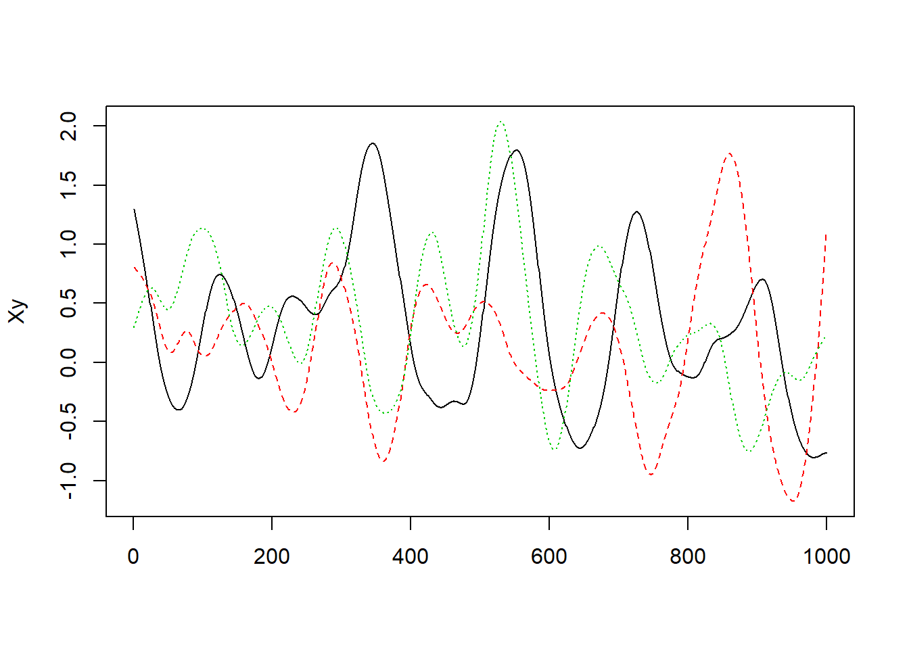

Download the file 5.R.RData and load it into R using the load function.
data_address <- "https://lagunita.stanford.edu/c4x/HumanitiesSciences/StatLearning/asset/5.R.RData"
download.file(data_address, paste0(getwd(), "/R"))Consider the linear regression model of y on X1 and X2. What is the standard error for \(\beta_1\)?
load(path.expand("~/R/StatisticalLearning/data/5R.RData"))
model_51 <- lm(y ~ X1 + X2, data = Xy)
summary(model_51)##
## Call:
## lm(formula = y ~ X1 + X2, data = Xy)
##
## Residuals:
## Min 1Q Median 3Q Max
## -1.44171 -0.25468 -0.01736 0.33081 1.45860
##
## Coefficients:
## Estimate Std. Error t value Pr(>|t|)
## (Intercept) 0.26583 0.01988 13.372 < 2e-16 ***
## X1 0.14533 0.02593 5.604 2.71e-08 ***
## X2 0.31337 0.02923 10.722 < 2e-16 ***
## ---
## Signif. codes: 0 '***' 0.001 '**' 0.01 '*' 0.05 '.' 0.1 ' ' 1
##
## Residual standard error: 0.5451 on 997 degrees of freedom
## Multiple R-squared: 0.1171, Adjusted R-squared: 0.1154
## F-statistic: 66.14 on 2 and 997 DF, p-value: < 2.2e-16Next, plot the data using matplot(Xy, type="l"). Which of the following do you think is most likely given what you see?
matplot(Xy, type="l")
Now, use the (standard) bootstrap to estimate s.e.(\(\hat\beta_{1}\)). To within 10%, what do you get?
beta_hat_1 <- function(data, index, formula) {
model <- lm(formula, data = data[index, ])
summary(model)$coefficients[2, 1]
}
library(boot)
boot_model_51 <- boot(data = Xy, statistic = beta_hat_1, R = 15000, formula = y ~
X1 + X2, parallel = "snow", ncpus = 4)
boot.ci(boot_model_51, conf = 0.9)## BOOTSTRAP CONFIDENCE INTERVAL CALCULATIONS
## Based on 15000 bootstrap replicates
##
## CALL :
## boot.ci(boot.out = boot_model_51, conf = 0.9)
##
## Intervals :
## Level Normal Basic
## 90% ( 0.0980, 0.1922 ) ( 0.0984, 0.1921 )
##
## Level Percentile BCa
## 90% ( 0.0985, 0.1923 ) ( 0.0991, 0.1928 )
## Calculations and Intervals on Original Scaleboot_model_51##
## ORDINARY NONPARAMETRIC BOOTSTRAP
##
##
## Call:
## boot(data = Xy, statistic = beta_hat_1, R = 15000, formula = y ~
## X1 + X2, parallel = "snow", ncpus = 4)
##
##
## Bootstrap Statistics :
## original bias std. error
## t1* 0.1453263 0.0001838754 0.02863299Finally, use the block bootstrap to estimate s.e.(\(\hat\beta_1\)). Use blocks of 100 contiguous observations, and resample ten whole blocks with replacement then paste them together to construct each bootstrap time series. For example, one of your bootstrap resamples could be:
block_boot_model_51 <- tsboot(Xy, beta_hat_1, formula = y ~ X1 + X2, R = 15000,
sim = "fixed", l = 100, parallel = "snow", ncpus = 4)
boot.ci(block_boot_model_51, conf = 0.9)## BOOTSTRAP CONFIDENCE INTERVAL CALCULATIONS
## Based on 15000 bootstrap replicates
##
## CALL :
## boot.ci(boot.out = block_boot_model_51, conf = 0.9)
##
## Intervals :
## Level Normal Basic Percentile
## 90% (-0.1759, 0.4693 ) (-0.1673, 0.4707 ) (-0.1800, 0.4580 )
## Calculations and Intervals on Original Scaleblock_boot_model_51##
## BLOCK BOOTSTRAP FOR TIME SERIES
##
## Fixed Block Length of 100
##
## Call:
## tsboot(tseries = Xy, statistic = beta_hat_1, R = 15000, l = 100,
## sim = "fixed", formula = y ~ X1 + X2, parallel = "snow",
## ncpus = 4)
##
##
## Bootstrap Statistics :
## original bias std. error
## t1* 0.1453263 -0.001409248 0.1961311